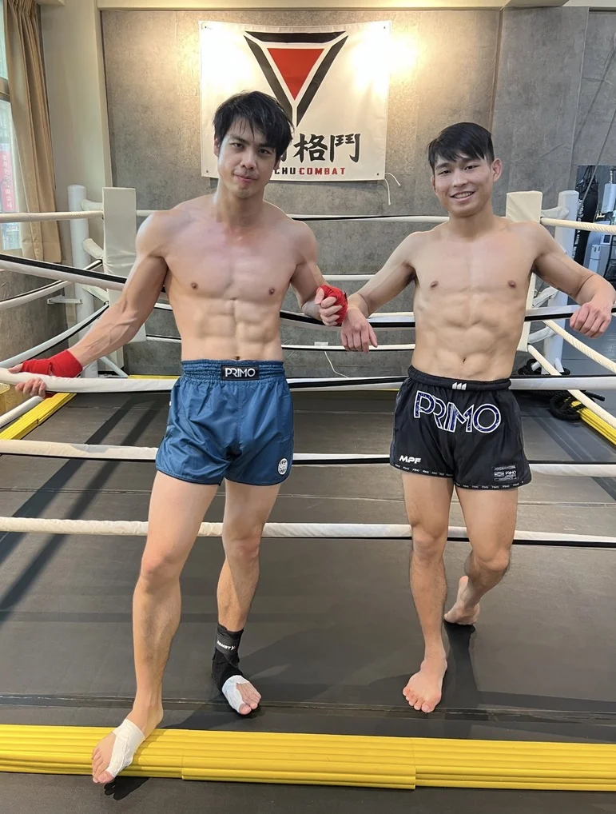

新竹泰拳一對二私人課和夥伴一起開始的選課指南
想和朋友或伴侶在新竹學泰拳，先了解一對二私人課的教學方式、程度差異與體驗費用。整理兩人共同時段、課前需求及預約流程，也說清楚一對二一堂和一對一兩堂的差別。
哪些情況適合兩人一起上課
想學泰拳，卻不太想自己走進陌生拳館，可以和朋友、伴侶或同事先討論一堂共同體驗。兩人同行的重點，是你們都願意參與，也能把時間排在一起，不必追求相同體能或相同進度。
如果兩人都希望從站架、基本拳腿開始，又想在練習時得到教練的個別提醒，一對二是可以詢問的形式。若其中一人只想偶爾陪伴，另一人卻想密集細修技術，先把差異說清楚，可能分開上課會更合適。
希望認識更多練習夥伴，也能配合固定課表，可以比較團體課與私人課。不必因為有人同行，就直接決定長期私人課方案。
一對二一堂和一對一兩堂的差別
看到相同金額時，要先確認是幾個人、幾堂課。以下是 HCF 官網在本文發布時列出的體驗方式，金額均為新臺幣，並非新竹各拳館的市場均價。
| 體驗方式 | 人數與堂數 | 費用與時長 |
|---|---|---|
| 一對一體驗 | 一位學員上一堂 | NT$1,400 每堂 60 分鐘 |
| 一對一深度體驗 | 一位學員上兩堂 | 兩堂合計 NT$2,400 每堂 60 分鐘 |
| 一對二體驗 | 兩位學員一起上一堂 | 兩人合計 NT$2,400 一堂 60 分鐘 |
手機可左右滑動表格查看完整內容
一對二的平均費用為每人 NT$1,200，但不能因此把它理解成兩堂一對一課。教練的注意力需要在兩人之間分配；若你希望整堂都針對自己的動作調整，可以選擇一對一。最新費用、體驗資格與方案條件請以課程價目表及教練確認為準。
程度不同也要先說清楚
一人完全沒經驗，另一人已經上過團課，不代表一定不能同行，也不代表一定適合同一堂。先告知各自學過什麼、最想練什麼，以及是否願意一起從基本動作開始，讓教練判斷能否安排。
- 兩人都是新手 可以詢問從站姿、移動及基本拳腿開始的方式。
- 一人有經驗 說明希望複習基本動作，還是希望集中修正特定技術。
- 目標不同 例如一人想建立運動習慣，另一人想練攻防，先討論共同內容與個別需求。
- 不想接觸對練 預約時直接說明，詢問以基本動作與打靶為主的安排。
課程內容由教練依兩人的情況確認。想先分清打靶與對練，可以閱讀泰拳不同練習方式的介紹。
預約前兩人先確認這四件事
- 共同時段 各自列出可到館的時間，包含下班交通與報到緩衝，找出真正重疊的區間。
- 各自的目標 不只寫想變強，也可以寫想學會基本拳腿、想有人提醒站姿，或想每週固定運動。
- 可投入的天數 先講目前一週願意花幾天，不必為了配合夥伴而填超出負擔的頻率。
- 改約與缺席規則 問清楚臨時有一人不能到時怎麼處理，以及取消期限與後續方案效期。
第一次不用急著替兩人買齊整套裝備。先確認體驗的裝備借用或租借安排，再準備方便活動的運動服、水與毛巾。完整到館資訊可看第一次學泰拳的準備清單。
在新竹安排兩人的第一堂體驗
HCF 新竹格鬥位於新竹市北區林森路 301 號 2 樓。從家裡或公司出發前，先以實際上課時段查交通，不要只用地圖距離判斷能否準時到達。
點選本頁的體驗按鈕，會前往同一份「安排我的第一堂體驗」表單，並帶入一對二的私課偏好。請填自己的經驗、目標、每週天數與方便時間，再向教練補充兩人同行和夥伴的需求。
表單送出後，依畫面到官方 LINE 確認並傳送內容，由教練核對課程、費用及可約時段。送出需求不等於預約成立，收到教練確認的時間後再安排到館。

常見問題
一定要是情侶才能報一對二嗎
不需要。朋友、伴侶或同事都可以先詢問兩人同行安排。重點是兩人都有參與意願，能配合共同時段，並讓教練了解各自程度與目標。
兩個人會互相對打嗎
一對二代表教練與學員的人數，並不代表課程一定包含接觸對練。可以先提出希望以基本動作與打靶為主，具體內容由教練確認。
一個人臨時不能到可以自己上嗎
請在預約前確認缺席、取消與改約規則。一對二是否可以改為一人上課，以及費用如何處理，需要由教練依方案確認，不能自行視為一對一課。
NT$2400 是一個人還是兩個人的費用
HCF 官網目前列的一對二體驗是兩人合計 NT$2,400，一堂 60 分鐘。相同金額的一對一深度體驗則是一人上兩堂，請在填表時選清楚形式。
延伸閱讀
把你們想學的內容交給教練
先告訴我們兩人的經驗與共同時段，再確認適合的課程安排。
課程費用與條件核對於 2026 年 11 月 13 日 查看最新價目表 可約時段與預約方式由教練確認